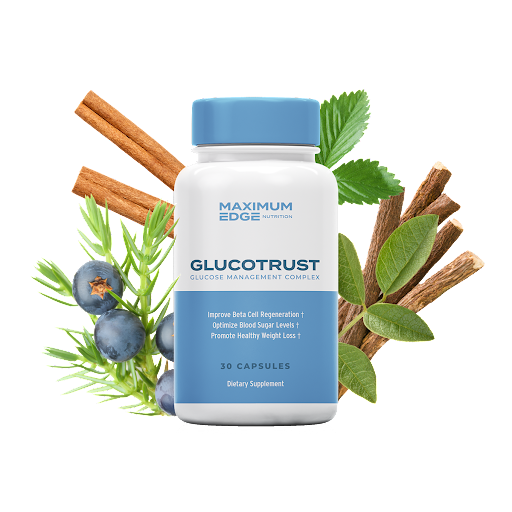

Get 90% Off Discount Today + Free Shipping + Get Free 3 Bonuses From Website

Discover A Method To Support
Healthy Blood Sugar Levels
The formula container powerful ingredients to takel both type of diabetes and boost metabolism. Glucotrust is an all natural blood sugar control product that uses powerful compounds.
Get 90% Off Discount Today + Free Shipping + Get Free 3 Bonuses From Website
Glucotrust™
The unique ingredients in GlucoTrust, a popular blood sugar control supplement, assist users in managing blood sugar levels. This blood sugar support formula has been shown to benefit overall health.
The supplement's primary goal is to increase your body's glucose metabolism so you don't have high blood sugar or diabetes. The supplement also claims to offer additional health benefits that will keep you fit and healthy.
According to the manufacturers, of this formula reduces insulin resistance while increasing insulin production. This blood sugar support supplement is intended to assist you in maintaining stable blood glucose levels.
This supplement also aids in the reduction of sugar cravings, allowing you to avoid overeating or indulging in sugary foods. This small, effective solution is ideal for people who want to balance their blood sugar levels without the side effects of drugs.
It promotes deep sleep in order to keep blood glucose levels stable. This is a one-of-a-kind feature. Surprisingly, the approach is extremely effective in producing the desired results. As a result, it is an excellent choice for diabetic patients.
Numerous scientific studies have found a direct link between deep, rejuvenating sleep and healthy blood sugar levels. The supplement promotes deep sleep.
The supplement is made up of natural ingredients that were carefully chosen by the scientists and doctors who created the formula. GlucoTrust (30 Capsules) is suitable for people of all ages.
How does Glucotrust work?
GlucoTrust is a science-backed formula that uses a triple-action process to naturally reverse high blood glucose levels. The formula contains several sleep-inducing ingredients that assist your body in entering repair mode, where it can repair all of the damage caused by high blood glucose levels.
We are under a lot of stress, and our stress levels are what affect the quality of our sleep. It is critical to balance important hormones in your body in order to lose belly fat and address the problem of high glucose levels.
To balance your hormones, you must sleep deeply. Cortisol, a fat-storing hormone in the abdomen, is one such hormone.
Cortisol levels rise when you don't get enough sleep because of stress. Cortisol levels are responsible for converting the food you eat into a dangerous type of fat known as visceral fat.
According to research, visceral fat wraps around your abdominal organs. As a result, GlucoTrust James Walker assists you in sleeping deeply in order to control cortisol and boost the leptin hormone, which is known as the hunger-controlling hormone.
You won't crave as much once your leptin levels have been raised. Soon, you'll start losing belly fat and a lot of extra pounds from your body parts, making you feel young and thin again.
In addition, you will quickly eliminate high blood glucose levels!
Benefits
As you already know, GlucoTrust has been one of the most effective formulas in the world these days that is known for helping you control your blood sugar levels in one of the safest, fastest, and natural manner. GlucoTrust formula will not only help you manage your blood sugar levels but it will also provide you with tons of benefits such as: – You will have a good balance in your blood sugar levels – You can increase the insulin sensitivity – You can reduce insulin resistance as well – Your body will be protected against chronic heart problems – You will have more energy than ever. – Your blood pressure will be controlled – Your cholesterol levels will be well-balanced – Your body will simply be producing more insulin – You will not experience fatigue anymore – You can fight off obesity and its ill effects – You will be able to break all future outbreaks of this disease – Your body will remain immune to all diseases and infections – You can finally bid goodbye to your doctor and all the toxic medications – And much more
Better inflammatory levels
Improved metabolism
Improved cholesterol profile
Better control on stress levels
Improvement in blood pressure levels
Strengthened gut immunity
Go GlucoTrust Active Ingredients
GlucoTrust is made using some of the best herbs and ingredients that have all been sourced from the highest and cleanest places on the earth. GlucoTrust supplement ensures the high potency and quality of the nutrients. Also, these superfoods have been tested clinically and scientifically to have extremely superior effects and quality. The GlucoTrust formula contains many berries, roots, herbs. Let us take a look at them below:- Guggul: It will help control blood sugar levels and will also help lower high blood pressure and high cholesterol levels. GlucoTrust supplement will help you lose a little weight too!
Bitter Melon: It is an extremely potent ingredient that can help control blood sugar levels and it will help you improve the functions of insulin. GlucoTrust will ensure that your immune system is strengthened.
Licorice Root Extract: It aids digestion and the issue of ulcers as well. GlucoTrust supplement can be used as a natural treatment for many things.
Cinnamon Bark: It will help maintain blood sugar levels and will help you heal from bacterial infections and maintain the gastrointestinal tract as well.
Gymnema Sylvestre: It helps balance high blood sugar levels and increases insulin production as well.
Alpha Lipoic Acid: It helps repair cell damage, protects your heart health, helps in efficient nerve functioning, and will also work as an anti-inflammatory ingredient.
Banaba Leaf: It has amazing antioxidant properties that help you control high cholesterol levels and will also reduce blood sugar levels in you.GlucoTrust supplement will help tackle all the ill effects of suffering from obesity as well.- Yarrow Flowers: It will help you cure gastrointestinal issues and will also prevent fever and cold.
Juniper Berry: It works as an anti-inflammatory ingredient
White Mulberry: It will help you control high blood sugar levels and will also help you fight bad cholesterol levels. Meanwhile, GlucoTrust supplement will also control high blood pressure levels and will help you reduce the joint pain caused in arthritis patients.
L-Taurine: It helps control blood pressure and cholesterol levels and will reduce the risk of developing cardiovascular diseases. GlucoTrust supplement will help keep your nerves healthy and will provide you with a calming effect.
Cayenne: It controls your appetite and will also help you reduce joint pain. GlucoTrust supplement improves your metabolism as well.- Vitamin C: It will help you control your blood sugar levels.
Vitamin E: It is super beneficial to help cure health issues that come
Magnesium: It will help you convert glucose into energy that can be used by you in your daily work life.
Zinc: It simply helps suppress the appetite and will also help reduce your
Manganese: It will help to improve the function of the production of essential pancreatic enzymes.
Chromium: It will boost the energy levels in your body and will help you maintain blood sugar levels.
Vanadium: IT will help you have insulin sensitivity.